Intel 8086/8088 и архитектура x86
К концу 1970-х годов рынок 8-битных процессоров был переполнен. Хорошо продавались кристаллы компаний Intel, Motorola и MOS Technology. Особенно успешным считался чип Zilog Z80. К тому же в продаже были распространены клоны этих процессоров, которые зачастую отличались от оригинальных моделей значительно улучшенными характеристиками. Развитие 8-битных решений достигло своего предела, поэтому крупные производители сконцентрировались на разработке 16- и 32-битных «камней».
Разработка 16-битного процессора Intel 8086 стартовала весной 1976 года. Тогда проект 8086 рассматривался лишь промежуточным этапом перед запуском 32-битного iAPX 432 одноименной архитектуры. На этот чип в компании возлагали очень большие надежды, но в то же время понимали, что существующие 8-битные процессоры не смогут обеспечить стабильное финансовое положение компании. К тому же для Intel было делом принципа сместить с лидирующих позиций Zilog Z80, разработанный, как вы уже знаете, Федерико Фаджином. Поэтому было принято решение разработать временную замену iAPX 432 в лице процессора 8086.

Разработка 8086 была поручена инженеру Стивену Морсу, который скомпилировал основные спецификации процессора и его архитектуры к середине лета 1976 года. Еще два года понадобилось Intel для его создания. И вот 8 июня 1978 года кристалл 8086 был официально анонсирован.
Процессор производился по 3-мкм техпроцессу и содержал 29 000 транзисторов. Его тактовая частота составляла от 4 до 10 МГц. Разрядность регистров и шины данных равнялась 16 бит, а разрядность шины адреса составляла 20 бит. Объем адресуемой памяти равнялся 1 Мбайт. Максимальное тепловыделение 8086 находилось на уровне 1,75 Вт. В качестве форм-фактора использовался 40-контактный DIP. В ходе разработки процессора инженеры Intel не ставили задачи обратной совместимости на программном уровне 8086 с предыдущими 8-битными моделями, однако большинство программ, написанных для кристалла 8080, можно было запустить на «восемьдесят шестом» после перекомпиляции.
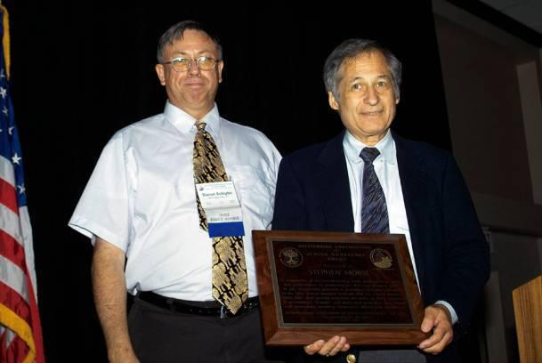Intel 8086 был примерно в 10 раз быстрее, чем модель с индексом 8080. Процессор стал первой реализацией системы команд x86 и одноименной архитектуры, которая впоследствии стала своего рода стандартом и используется в кристаллах AMD и Intel по сей день.
Однако в то время в Intel даже не подозревали, насколько успешным окажется их проект. Продажи 8086 шли очень вяло, и в 1979 году компанию покинул отец «восемьдесят шестого» Стивен Морс. Причина слабых продаж новых процессоров крылась в том, что для их работы были необходимы 16-разрядные микросхемы поддержки. На то время рынок был сосредоточен на производстве вспомогательных чипов для 8-битных процессоров, а 16-битные решения были весьма дорогим удовольствием. Поэтому большинство производителей всё ещё делали ставку на бюджетные 8-разрядные «камни».
Чтобы решить проблему и увеличить продажи 8086, в Intel пошли интересным путем. В 1979 году они выпустили процессор 8088. «Восемьдесят восьмой» был полным аналогом кристалла 8086, за исключением измененной шины данных. Ее ширина была урезана с 16 бит до 8 бит, что позволяло ему работать с 8-разрядными микросхемами поддержки. Одним небольшим изменением Intel наконец создала почву для использования своих 16-битных процессоров.
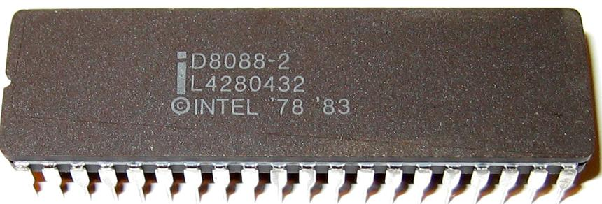Результаты не заставили себя долго ждать. На то время компания IBM только начинала разработку своего впоследствии очень успешного компьютера IBM 5150. Было решено использовать в системе исключительно 16-битный процессор, и перед инженерами IBM встал выбор между тремя моделями: Motorola 68000 (о нем мы расскажем несколько позже), Intel 8086 и Intel 8088. Для IBM «камни» Intel были более привычными и удобными, поэтому выбор был сделан в пользу «восемьдесят восьмого». К тому же для работы этого процессора можно было использовать более простые 8-разрядные микросхемы поддержки, что позволило IBM создавать более дешевые компьютеры. Еще одним плюсом интеловских кристаллов было то, что у компании Microsoft уже имелся язык программирования BASIC для 8088.
Разработка компьютера 5150 имела огромное значение для компании IBM. Во второй половине 1970-х годов рынок персональных десктопов активно развивался, а IBM уделяла этому сегменту недостаточно внимания. Само собой, в компании осознавали всю его перспективность, в связи с чем и было принято решение о разработке собственной модели ЭВМ.
IBM 5150 — первая модель линейки IBM PC — увидела свет в 1981 году. Топовая версия компьютера оценивалась в 3005 долларов США. Она комплектовалась процессором Intel 8088 с частотой 4,77 МГц, а объем оперативной памяти составлял 64 Кбайт. В качестве устройства для хранения данных в IBM 5150 использовались 5,25-дюймовые дискеты. А несколько позже в продаже появились модели компьютера, которые позволяли использовать аудиокассеты как хранилище данных. Установить жесткий диск в систему было невозможно, однако спустя некоторое время IBM выпустила винчестер, который подключался к 5150 в качестве модуля расширения. Компьютер обладал несколькими портами расширения, через которые, кроме винчестера, подключались видеоадаптеры, карты с портами ввода-вывода и другие устройства.
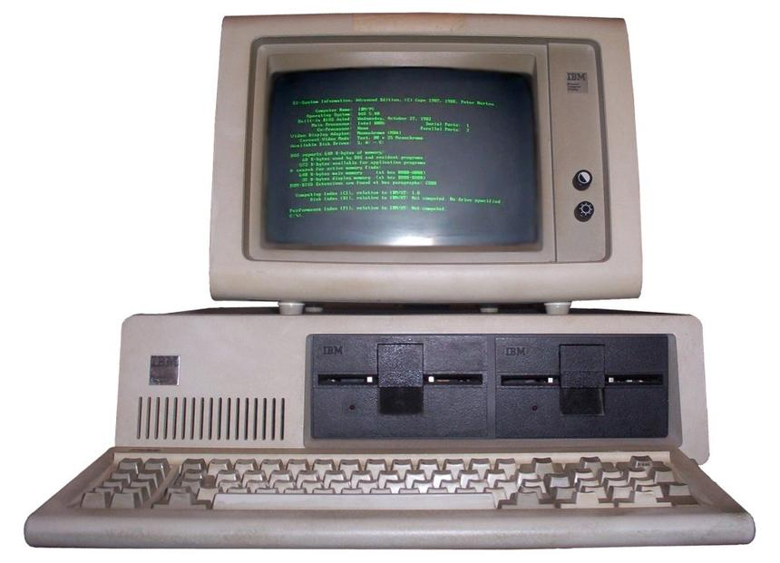Младшая версия десктопа стоила почти в два раза меньше — 1565 долларов США. В «урезанной» модели использовался тот же Intel 8088, но объем оперативной памяти составлял всего 16 Кбайт. Во-вторых, в отличие от старшей версии, младшая не комплектовалась CGA-монитором и флоппи-дисководом. В качестве дисплея предлагалось использовать телевизор, а хранить данные можно было на кассетном накопителе. Также, в отличие от топовой версии IBM 5150, младшая модель не работала с операционной системой PC-DOS 1.0 (впоследствии ставшей MS-DOS).
Не сказать, чтобы успех первого IBM PC был ошеломляющим. Да, компьютер неплохо продавался, но не более. В то время можно было приобрести персональный компьютер по более низкой цене и с лучшими характеристиками, нежели у IBM. Зачастую на руку продажам играл сам бренд IBM — его знали все.
В марте 1983 года компания представила обновленную версию 5150 под названием IBM PC/XT. Компьютер базировался на том же процессоре 8088, однако в то же время привнес множество изменений. Так, в компьютер наконец-то был добавлен полноценный жесткий диск с интерфейсом ST-412 объемом 10 Мбайт, а емкость оперативной памяти составляла 128 Кбайт или 256 Кбайт. Комплектация компьютера включала монохромный видеоадаптер MDA или 16-цветный CGA. Спустя некоторое время в системе появилась возможность использовать адаптер EGA. Что касается операционной системы, то в IBM PC/XT использовалась PC-DOS версии 2.0.
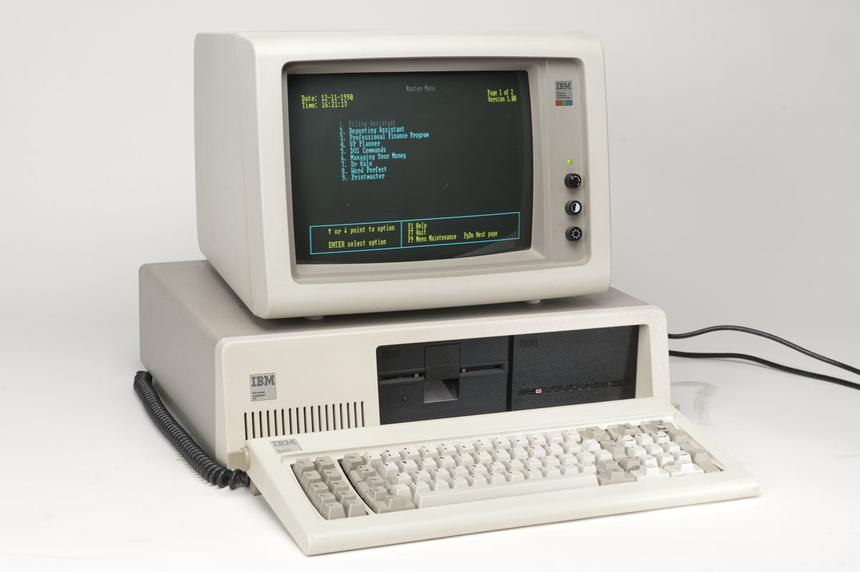Интересно, что IBM не стала защищать архитектуру компьютера PC авторскими правами, в связи с чем на рынке появилось огромное количество клонов этой модели, которые также использовали процессор 8088. Компания Intel лишь выигрывала от такого положения дел.
Стоит отметить, что у самого процессора 8088 также было множество клонов. Их производством занимались такие крупные компании, как AMD, Siemens, NEC и другие.
Intel 80186 и 80286
Сразу после окончания разработки 8086 инженеры Intel принялись за новый проект — процессор 80186. Этот чип базировался на той же архитектуре. Как известно, главным недостатком 8086 считалась необходимость использования многочисленных микросхем поддержки, поэтому в 80186 было решено отказаться от них. Все необходимые компоненты были перенесены в сам процессор. Так, архитектура 80186 уже включала в себя два контроллера прямого доступа к памяти со схемами прерываний (DMA), дешифраторы адреса, трехканальный программируемый таймер-счетчик, генератор синхронизации и программируемый контроллер прерываний. Кроме этого, значительно расширилась система внутренних инструкций. Были добавлены дополнительные команды работы со стеком и портами ввода-вывода, появились новые арифметические команды и команды реализации языков высокого уровня.
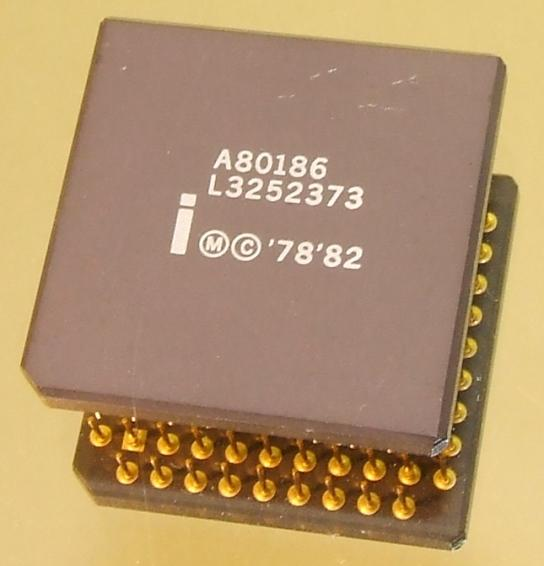Что касается технических характеристик процессора, то здесь он ничем не удивил. Кристалл, как и 8086, производился по 3-мкм техпроцессу и содержал 134 000 транзисторов. Разрядность регистров и шины данных составляла 16 бит, шины адреса — 20 бит. Объем адресуемой памяти по-прежнему равнялся 1 Мбайт. Тактовые частоты варьировались от 6 до 25 МГц.
Из-за значительно переработанной архитектуры 80186 не смог применяться IBM PC-совместимых компьютерах, из-за чего он очень редко встречался в компьютерах того времени. Одними из немногочисленных моделей, использующих этот «камень», стали первый в мире лэптоп Dulmont Magnum, компьютеры Mindset, Siemens PC-D, HP 100/200LX, HP 1000CX, школьные десктопы Compis и RM Nimbus, а также некоторые другие устройства.
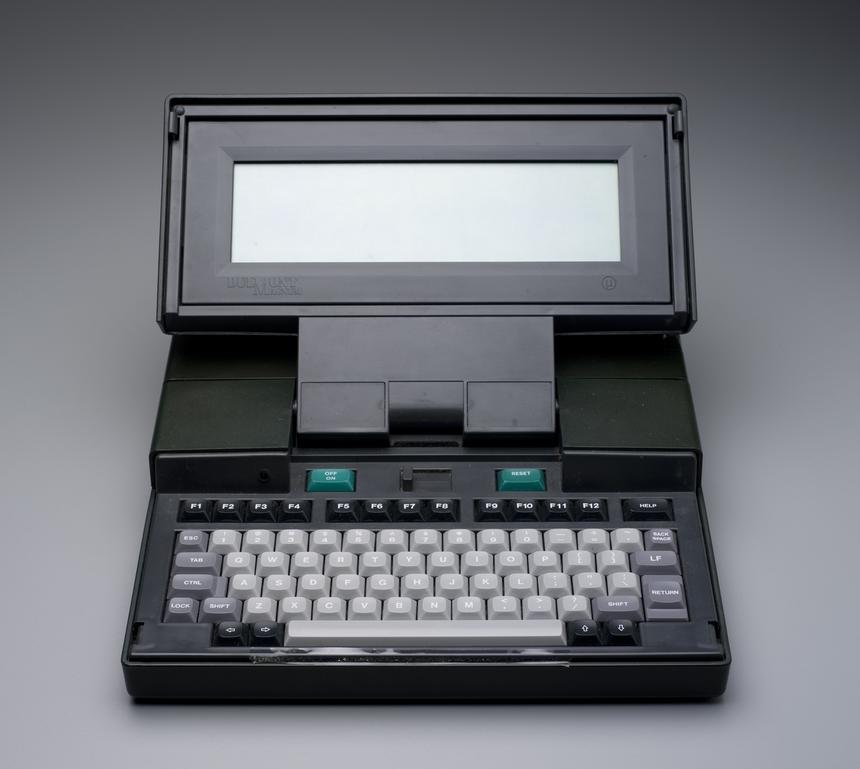Следующим шагом Intel стал запуск процессора с индексом 80286. Он разрабатывался параллельно с 80186, поэтому его тоже можно считать переработанным «восемьдесят шестым», на архитектуре которого он и базировался. 80286, так же как и 80186, был представлен в 1982 году. Если сравнивать архитектуры этих процессоров, то можно заметить, что в «двести восемьдесят шестом» отсутствовали некоторые встроенные модули, которые имелись в 80186. Помимо этого, 80286 отличался увеличенным количеством регистров. В кристалл были добавлены новые инструкции, а также защищенный режим работы «камня».
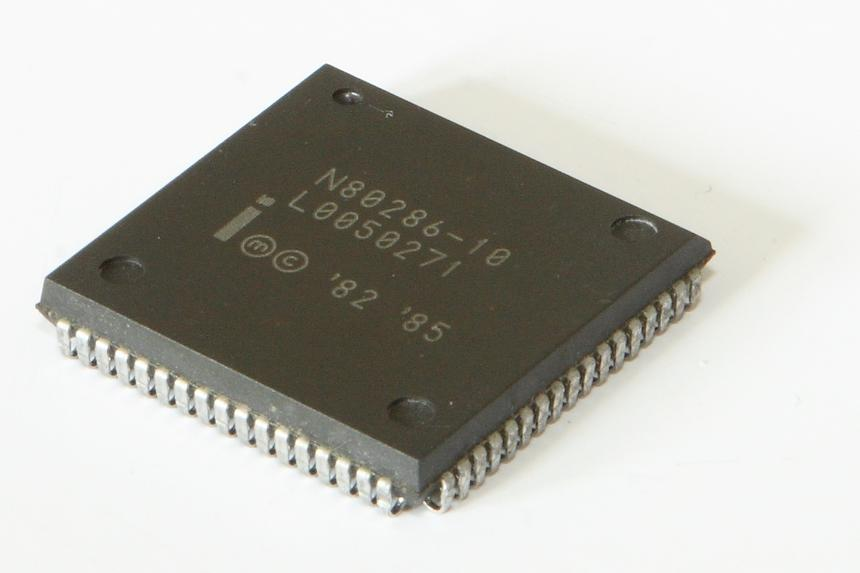Скажем пару слов о режимах работы процессора. Помимо защищенного режима, 80286 поддерживал и реальный. В нем кристалл был полностью совместим с другими процессорами с архитектурой x86. Проще говоря, на нем запускались программы, предназначенные для 8086 и 8088. При этом объем адресуемой памяти составлял 1 Мбайт. В защищенном режиме емкость адресного пространства могла составлять до 1 Гбайт за счет изменения механизма адресации памяти. Таким образом, в памяти хранилась лишь та часть программы, которая была необходима в данный момент. А в случае обращения к той части, которая не хранилась в памяти, операционная система приостанавливала программу, подгружала необходимые куски кода и продолжала ее выполнение. Несмотря на поддержку защищенного режима, процессором он использовался крайне редко и очень ограниченно.
Теперь поговорим о технических характеристиках устройства. Прежде всего стоит отметить, что 80286 стал первым «камнем» Intel, выпускающимся по 1,5-мкм технологическим нормам. Количество транзисторов процессора составляло 134 000 штук. Тактовая частота зависела от модели и равнялась 6 МГц, 8 МГц, 10 МГц или 12,5 МГц соответственно. Разрядность регистров и шины данных составляла 16 бит, а шина адреса являлась 24-разрядной. Как мы уже говорили, объем адресуемой памяти составлял 16 Мбайт, хотя в защищенном режиме можно было использовать до 1 Гбайт виртуальной памяти. Эффективность процессора была очень высока. При частоте 12,5 МГц модель 80286 выполняла не менее 2,66 миллионов операций в секунду. Для сравнения: 8086 с частотой 10 МГц имел производительность около 0,75 миллионов операций в секунду.
Как и прежде, Intel предоставляла лицензии на производство клонов 80286 сторонним производителям.
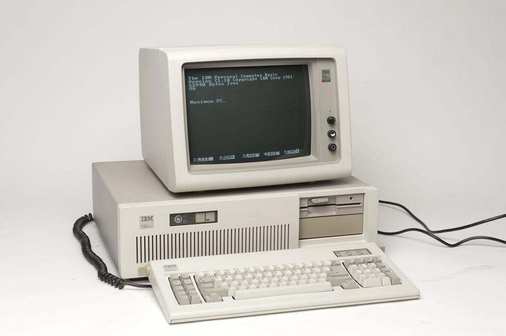Основным применением для модели 80286 стали компьютеры IBM PC/AT — третья по счету модель в линейке IBM PC. И самая успешная. В отличие от своих предшественников в лице IBM PC и PC/XT, которые использовали процессор 8088, PC/AT оснащался кристаллом 80286 с частотой 6 или 8 МГц. Особенностью компьютера стало применение 16-разрядной шины ввода-вывода AT bus. Ее использование позволило увеличить максимальный объем оперативной памяти до 16 Мбайт. Например, IBM PC и PC/XT работали лишь с оперативной памятью объемом до 640 Кбайт. На материнской плате компьютера появилась батарейка для питания микросхемы CMOS объемом 50 байт. Прежде ее в системах IBM PC не было. В качестве хранилища данных все так же использовались 5,25-дюймовые дискеты емкостью 1,2 Мбайт, в то время как компьютеры IBM PC и PC/XT поддерживали лишь дискеты с объемом до 360 Кбайт. Графическая система PC/AT была представлена видеоадаптером EGA или PGA. Поздние модели IBM PC/AT комплектовались уже исключительно видеоадаптером VGA. Для работы всех нововведений требовалась иная операционная система — PC-DOS 3.0.
IBM PC/AT стал по-настоящему успешным. Он еще больше укрепил лидирующие позиции IBM и архитектуры x86 на рынке компьютеров.
Motorola 68k и компьютеры Apple
16-битные процессоры Intel не доминировали на рынке, несмотря на растущую популярность линейки IBM PC. Главным конкурентом «интеловских» кристаллов считалась серия процессоров Motorola 68000.
Проект Motorola 68k стартовал в 1976 году — тогда же, когда началась разработка 16-битного процессора Intel 8086. Изначально семейство 68k рассматривалось как чипы с совершенно новой архитектурой. Так, ни о какой обратной совместимости с 8-разрядными процессорами Motorola 6800 не шло и речи. Однако, забегая вперед, скажем, что кристаллы Motorola 68000 таки получили поддержку протокола шины «камней» предыдущего поколения. Ставка при разработке была сделана на другое — в Motorola хотели обеспечить обратную совместимость последующих разработок с семейством 68k. Словом, хотели создать такую архитектуру, которая бы стала базой для процессоров на долгие годы вперед.
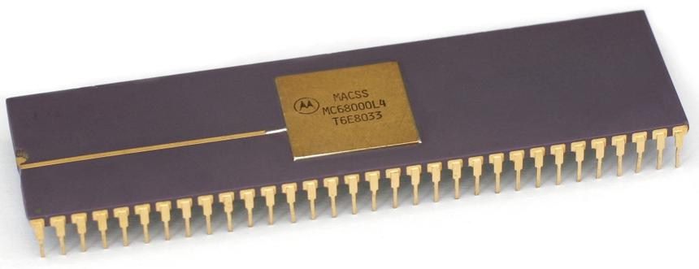Линейка Motorola 68000 была представлена в 1979 году. В основе процессоров лежал дизайн CISC, а многие архитектурные особенности были позаимствованы у компьютера PDP-11. Motorola 68000 нельзя однозначно отнести к категории 16- или 32-разрядных устройств. Хоть кристалл и имел 32-битное ядро, он работал посредством 16-битных шин данных. У Motorola получился этакий гибрид.
Само собой, что процессор Motorola 68000 имел совершенно иную систему команд, нежели процессоры с архитектурой x86. Набор инструкций кристалла считается более «ортогональным», чем x86. Это означает, что операции и операнды можно свободно комбинировать, не обращая внимания на ограничения, связанные с совместимостью конкретной операции и набора операндов. Преимуществом такого подхода является легкость программирования на ассемблере Motorola 68000.
Что касается других технических характеристик, то, как мы уже говорили, Motorola 68000 работал с 16-битной шиной данных и 24-разрядной шиной адресов. Его частота составляла от 8 МГц до 20 МГц, а количество транзисторов — 68 000 штук. Чип производился в форм-факторе DIP с 64 контактами, но также существовали модели с разъемами LCC и PGA.
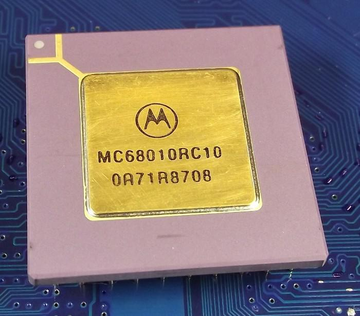Спустя три года Motorola выпустила следующую модель линейки 68k — процессор Motorola MC68010. Как ни странно, но кристалл оказался несовместим с моделью 68000 на программном уровне. При этом процессор не совершил никаких революций в дизайне. Главными отличиями «десятого» от кристалла с индексом 68000 стала работа с виртуальной памятью и добавление нового регистра VBR (vector base register).
Если говорить о технических характеристиках, то они почти полностью соответствовали таковым у Motorola 68000. Изменения затронули лишь число транзисторов, которых стало 84 000. Тем не менее модель 68010 оказалась примерно на 10% быстрее 68000. В сравнении с предшественником новый процессор не снискал особого успеха. Лишь благодаря поддержке работы с виртуальной памятью некоторые производители использовали чип в небольших UNIX-системах, например, Sun-2 Workstation и AT&T UNIX PC. Рынок находился в ожидании второго поколения Motorola 68k.
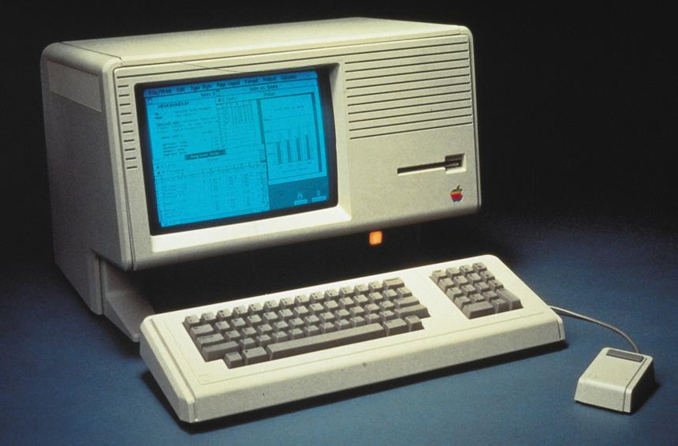Процессор Motorola 68000 применялся во многих компьютерах, однако многим он запомнился по первым компьютерам Apple. Так, разные версии этого «камня» применялись в первых персональных компьютерах Apple: Lisa и Macintosh.
Apple Lisa появился в 1983 году. На разработку компьютера ушло почти 5 лет. Как известно, старт проекту был дан еще в 1978 году. В Apple хотели создать компьютер, который совмещал бы все компоненты в одном корпусе. Инновационной была и техническая часть Lisa. В десктопе были реализованы защищенная память, кооперативная многозадачность, сложная файловая система, системы защиты от нарушения данных, поддержка до 2 Мбайт оперативной памяти и экран с высоким разрешением. Но проект ожидал коммерческий провал. Главной причиной низких продаж Lisa стала его высокая стоимость — 10 000 долларов США. Мало кто мог позволить приобрести себе такой компьютер домой.
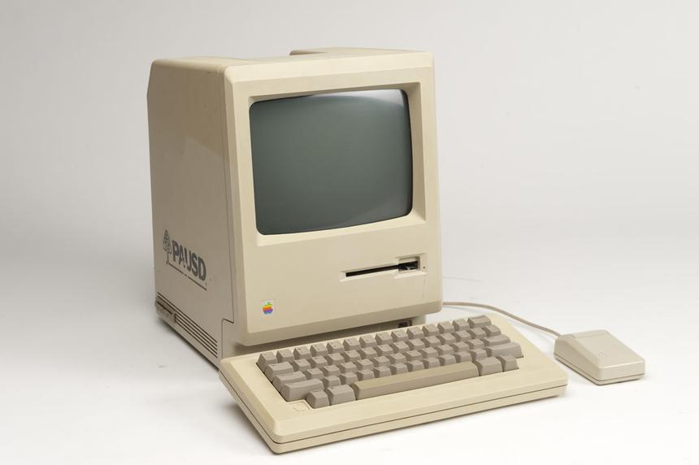Параллельно с Lisa шла разработка другого компьютера — Macintosh. Проект стартовал в 1979 году, а в 1981 году его возглавил Стив Джобс. Сам компьютер увидел свет в 1984 году. Принцип создания Macintosh был довольно прост: взять самое лучшее у Lisa, но при этом сделать компьютер максимально простым и доступным. Десктоп получил всё тот же процессор Motorola 68000, однако его частота была увеличена до 8 МГц. Объем оперативной памяти составлял 128 Кбайт. Конструкция «Макинтоша» предусматривала встроенный 9-дюймовый черно-белый экран с разрешением 512x342 точек. В качестве хранилища данных использовалась 3,5-дюймовая дискета объемом 400 Кбайт. Также компьютер комплектовался мышью и клавиатурой. Стоимость Macintosh составляла 2500 долларов, что было значительно ниже стоимости Lisa. Несмотря на то что компьютер Apple стоил больше, чем модели IBM PC, он не только смог составить достойную конкуренцию, но и стать полноценной альтернативой. Словом, выход «Макинтоша» положил начало большому противостоянию Apple и IBM.
Помимо компьютеров Apple, процессор Motorola 68000 применялся и в других устройствах: например, в высокопроизводительных калькуляторах Texas Instruments и десктопах Commodore Amiga, Sinclair QL и Atari ST.
DEC PDP-11
Несмотря на то что 80-е годы прошли под знаком доминирования компьютеров IBM и Apple, не стоит забывать о компьютерах PDP и конкретно о модели PDP-11, которая оказала большое влияние на архитектуру процессоров Motorola. Многие считают его одним из величайших десктопов всех времен.
PDP-11 представлял собой первую в мире 16-битную систему. Он стал доступен значительно раньше, нежели IBM PC и Apple Macintosh, и поступил в продажу еще в 1970 году. Как и все процессоры того времени, PDP-11 базировался на архитектуре CISC. Его главным отличием стала «ортогональная» система команд, которая применялась впервые. Многие модификации PDP-11 не имели отдельной шины ввода-вывода, а только шину памяти Unibus.
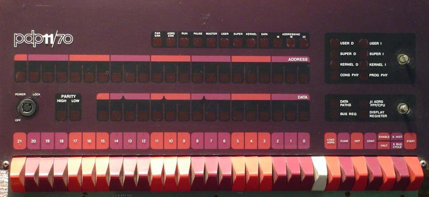Сама шина Unibus является первой компьютерной шиной. Она была полностью асинхронной, что позволяло одновременно подключать быстрые и медленные устройства.
Еще чуть позже в PDP-11 была добавлена шина для магнитных дисков и лент под названием Massbus. Также появились модели компьютера с интерфейсом Q-Bus, который представлял собой удешевленный вариант Unibus и использовал мультиплексирование, позволяющее линиям данных и адреса использовали одни и те же контакты. При этом функциональность шины практически не урезалась: Q-Bus поддерживала ввод-вывод с отображением на память (при обмене данными между любыми устройствами по шине используется один и тот же протокол), адресацию с точностью до байта и асинхронный протокол взаимодействия.
Техническая составляющая PDP-11 постоянно улучшалась, и со временем шины Unibus и Q-Bus банально стали ограничивать потенциал компьютера. Кроме этого, 16-битная адресация не позволяла создавать большие программы.
В итоге компьютер PDP-11 не выдержал конкуренции с только набирающими обороты компьютерами IBM PC.
WDC W65C816S и Zilog Z8000
Свои 16-битные процессоры выпустили компании Western Design Center (WDC) и Zilog. Первая представила свой кристалл W65C816S только в 1984 году. При этом процессор ничем не выделялся на фоне своих конкурентов. Более того, он, по сути, представлял собой лишь улучшенную версию 8-битного чипа WDC 65C02, который, в свою очередь, являлся клоном 8-битного кристалла MOS Technology 6502.
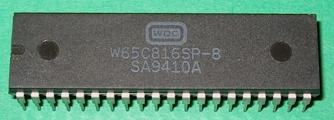Интересно, что WDC W65C816S был разработан по заказу Apple. «Яблочной» компании требовался процессор для обновленной серии компьютеров Apple II, который смог бы обеспечить обратную совместимость с 65C02, который использовался в начальной линейке Apple II. Так появился W65C816S. Каких-либо архитектурных особенностей у него не было. Процессор работал с 16-битными регистрами, поддерживал 24-битную адресацию памяти и 16-битный указатель стека, а также обладал расширенным набором инструкций. Несколько позже в W65C816S появилось статическое ядро, которое позволяло хранить данные регистра без получения тактового сигнала. Вкупе с использованием статической памяти с произвольным доступом это позволило «камню» потреблять минимальное количество энергии при переходе в спящий режим.
Свое применение процессор нашел в компьютере Apple IIGS, а также системах Acorn Communicator и C-One.
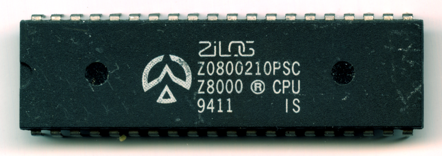Компания Zilog также представила последователя успешного процессора Z80 — 16-битный кристалл Z8000. Он не был обратно совместим с чипом «восьмидесятым» и в целом так и не смог повторить успех своего предшественника. Изначально были выпущены две версии процессора: Z8001 и Z8002. Их различия заключались лишь в том, что первый работал с адресацией до 8 Мбайт памяти, а второй — лишь до 64 Кбайт. Несколько позже появились модели Z8003 и Z8004, которые умели работать с виртуальной памятью. Все процессоры поддерживали ортогональную систему команд. Что касается тактовой частоты Z8000, то она варьировалась от 4 до 10 МГц.
Z8000 зачастую применялся в настольных UNIX-компьютерах, которые позволяли создавать настоящие многопользовательские системы. Также его можно было встретить в таких компьютерах, как Onyx C8000, Olivetti M и Commodore 900. Z8000 был представлен одновременно с процессорами Intel 8086 и Motorola 68000, но так и не смог составить им должной конкуренции.